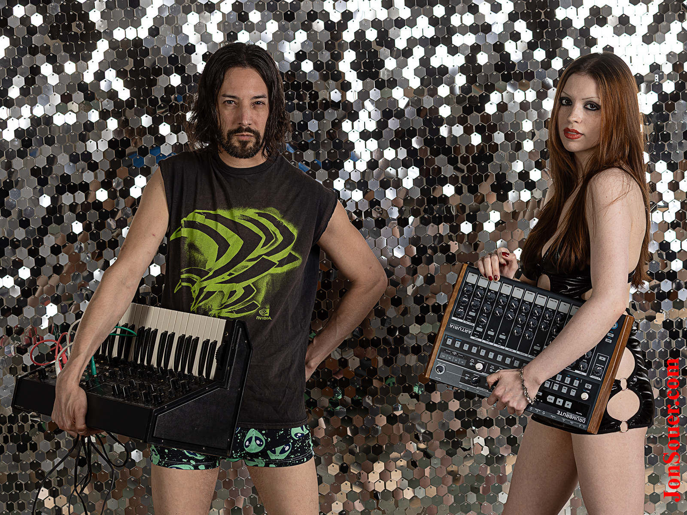

Meet the minds behind the music—Zander and Sam. Two artists, one signal. This is sound before impact.

Zander, is a multimedia visionary whose work spans music, body painting, photography, filmmaking, and interactive technology. A pioneer in the fusion of art and digital experience, Zander co-founded The Band Famous® in 2013 and helped launch the world’s first app-based album. His creative ethos is rooted in improvisation, emotional truth, and radical self-expression.
Zander’s body painting has been featured at NY Fashion Week, Summerset Music & Camping Festival, Sexapalooza, and international events for artists like Paul Van Dyk and Benny Benassi. He consulted for Game Show Network’s Skin Wars for three consecutive years, and his signature style—X Fashion—blends reflective materials like saran wrap and foil into wearable art. His work has been published in NY Arts Magazine and exhibited at venues like Broadway Gallery in NYC and FIMA in Montreal, where over 75,000 art lovers viewed his photography.
As a producer, singer, and multimedia artist, Zander has curated benefit music festivals like Live + Follow Your Dreams, supporting causes such as the Cystic Fibrosis Foundation and My Friend’s Place for homeless youth. He’s also the founder of Karnak Gallery, a public art venue in downtown Minneapolis, and the creative force behind VWInk Agency (Virtual Warrior Ink), serving clients like Red Bull.
His media project XTV has featured interviews with figures like Senator Amy Klobuchar and Bill Moyers, and his directorial work includes The Matrix: Because, a fan-made film that blends philosophy, futurism, and visual storytelling. Zander’s artistic mission is clear: to create immersive, transformative experiences that challenge perception and ignite emotion.
With Precognition, Zander channels his decades of creative fire into a new sonic frontier—music as prophecy, sound as signal. He produces, sings, and plays multiple instruments, forging tracks that feel like warnings from the future.
Sam is the newest voice in Precognition—but her impact is immediate. A vocalist, multi-instrumentalist, and producer, she brings raw emotion and instinctive energy to every track. Her sound is intuitive, cinematic, and unfiltered—like a dream you wake up remembering in fragments.
Sam’s artistic instincts are razor-sharp. She doesn’t just sing—she channels. Her lyrics cut through noise, her melodies haunt, and her production style is both experimental and deeply human. She’s not here to follow trends. She’s here to foretell them.
Together with Zander, Sam forms the pulse of Precognition—a duo that doesn’t just make music. They make impact.